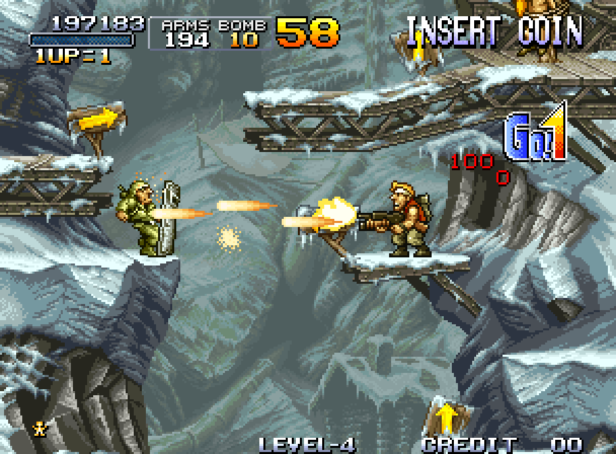
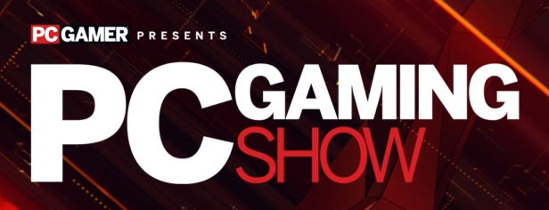
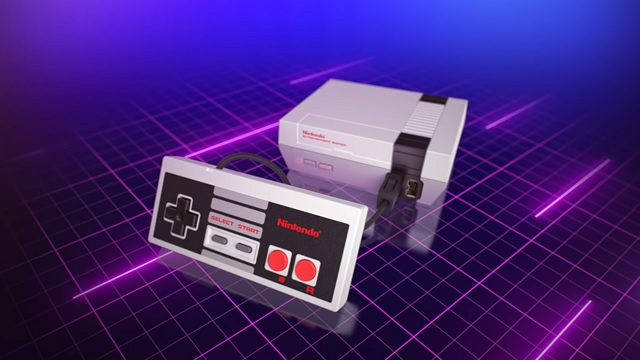
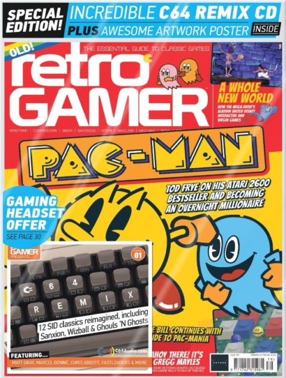

Bienvenido a Ctrl+Play !
Ctrl+Play Es la autoridad global en juegos de PC. Hemos estado cubriendo los juegos de PC durante más de 20 años, y continuamos ese legado hoy con ediciones impresas en todo el mundo y noticias, características, cobertura de deportes, pruebas de hardware y reseñas de juegos las 24 horas del día en Ctrl+Play, así como importantes publicaciones anuales eventos incluyendo el PC Gaming Show en el E3. Visite nuestra página de personal para ver al equipo internacional detrás de las historias y eventos, y manténgase día con nosotros en Steam, Twitter, Instagram y YouTube. Tamb puede unirse a nosotros todos los miércoles a la 1 pm hora Pacífico en nuestro canal Twitch para nuestra transmisión en v semanal y suscribirse a nuestro podcast en Spotify de Venezuela!.
Review Semanal
Metal Slug
Esta revisión se publicó originalmente en el número 38 de Edge, noviembre de 1996.
Green Beret fue muy divertido hace diez años, pero seguramente un juego similar no podría impresionar al jugador obsesionado con el 3D de hoy. Uniéndose a la vieja escuela de juegos de Neo-Geo con gran cantidad de sprites viene Metal Slug, una versión casera del SNK coin-op shoot 'em up.
Los años ochenta: un momento en el que los verdaderos gráficos en 3D eran la materia de los sueños, cuando los polígonos eran solo cosas de las que hablaba su profesor de matemáticas, y cuando el disparo horizontal en 2D estaba en su apogeo. Ahora, gracias a la confiable tecnología de cinco años de SNK y al desarrollador Nazca, Metal Slug está aquí, con seis etapas de retro disparos y hasta una gran cantidad de toques divertidos.
De hecho, Metal Slug es un juego adictivo y totalmente agitado que, con cada desplazamiento de la pantalla, trae un nuevo enemigo o conjunto gráfico para mantener al jugador conectado. En cuanto a las características básicas de los disparos, Slug tiene la inevitable lista de potenciadores de armas, incluida una ametralladora pesada, un lanzador de cohetes y un gran lanzallamas. También hay un saludable arsenal de diferentes enemigos: soldados, tanques, motociclistas, helicópteros e incluso biplanos y hombres rana.
PC GAMING SHOW

Si te gusta algo relacionado con PC, quizás te interese visitar PC Gaming Show de este año, nuestro escaparate anual de E3 que destaca los nuevos juegos y hardware que se dirigirán a PC.
Este año, el programa se emitirá a través de Facebook, YouTube, Twitch y Steam el lunes 11 de junio a las 3 p.m. Pacífico, así que asegúrate de que no te lo pierdas. Puede obtener todas sus actualizaciones en twitch.tv/pcgamer o puede encontrar todas las mejores entrevistas, avances y segmentos en pcgamer.com.
Como de costumbre, Sean "Day [9]" Plott será el anfitrión, y si está cerca de Los Ángeles o si va a visitar el E3, puede visitarlo de forma totalmente gratuita. El show de este año se llevará a cabo en The Wiltern, así que asegúrese de reservar su boleto ahora visitando pcgamingshow.com/tickets.com
NES MINI REGRESA A LOS ESTANTES

Es posible que hayas oído hablar de Nintendo Classic Mini: NES. De hecho, tendrías que haber estado viviendo debajo de una roca para no haberla visto. La dinky plug and play console fue el éxito de los juegos retro de 2016, gracias a una gran variedad de 30 juegos clásicos y calidad de construcción que ha llevado a otros fabricantes a elevar sus propios estándares. Desafortunadamente, la demanda de la consola superó con creces el suministro: era casi imposible encontrar una durante el breve tiempo que el sistema tenía en las estanterías, ya que los jugadores ansiosos (y unos cuantos revendedores) los aprovecharon. Como resultado, el sistema obtiene precios de más de £ 49.99 RRP, y los clones de eliminación han entrado en el mercado también.
La buena noticia es que Nintendo ha confirmado que el sistema volverá a las tiendas de todo el mundo en 2019, mientras que Nintendo Europe confirmará que la región se recuperará en el verano.
Retro Gamer 171
El número 179 de Retro Gamer está llegando a los quioscos de prensa, con dos fantásticos regalos que complacerán a cualquier fanático del Commodore 64. El CD C64 Remix, producido en asociación con C64Audio.com, presenta 12 melodías clásicas reimaginadas de sus encarnaciones SID originales, con el Me gusta Matt Grey, Marcel Donné y Chris Abbott que mezclan a Rob Hubbard, Martin Galway y más. Vea la parte inferior de esta publicación para ver la lista completa de canciones. También hay un póster a doble cara, con una escena nostálgica de Commodore 64 en un lado y una selección de fantásticas ilustraciones de Bob Wakelin en el otro.
Dentro de la revista, encontrarás dos grandes características en Pac-Man. En el primero, Tod Frye habla sobre su conversión de Atari 2600 del clásico juego de arcade, y los altibajos que acompañaron. En el segundo, nos adentramos en la secuela de arcade de finales de los años ochenta Pac-Mania y todas sus conversiones en casa en una Guía definitiva. En otra parte de la revista, encontrarás la creación de los éxitos informáticos para el hogar Dark Star y Moonstone, así como el exitoso juego de plataformas con licencia Aladdin de Disney. Además, hay una guía para coleccionistas de los juegos Quicksilva, un vistazo a los excelentes clones de arcade de la BBC Micro y un Informe de minorías sobre los juegos de importación de Dreamcast.
También encontrarás una Guía definitiva para el alegre Parodius de los disparos de Konami, una historia de las salidas de Sonic The Hedgehog en el Sistema Maestro. Como siempre, el tema se completa con una entrevista sentada, con Gregg Mayles, un veterano diseñador de juegos en Rare cuyo trabajo incluye Battletoads, Donkey Kong Country, Banjo-Kazooie, Viva Pinata y el actual juego de Xbox One. Mar de ladrones Por supuesto, eso no es todo; como siempre, se presentan muchos más juegos en Retro Revivals, The Unconverted, Classic Moments, Lost In Translation y Back to The Noughties.
Puede encontrar la revista en todos los buenos periódicos a partir del jueves 22 de abril de 2018, o hacer pedidos en línea a través de Mis revistas favoritas. Si prefieres una copia digital, puedes encontrarla en Apple App Store, Google Play, Zinio, Pocketmags o Readly.
Contactanos!